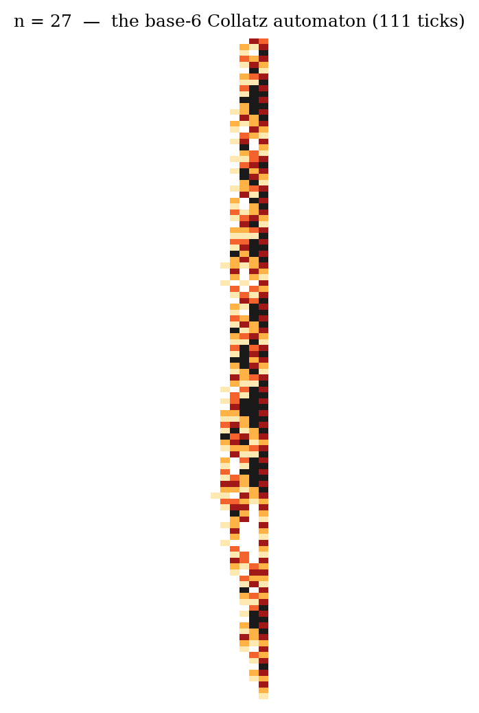
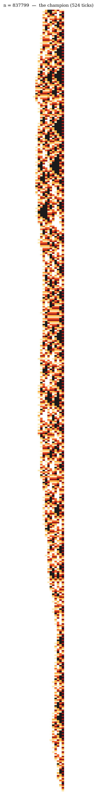

Part 2 of 6. Series index in part 1. Repository: collatz_ai.
The Collatz rule is made of exactly two ingredients: multiplying by 3 and dividing by 2. Neither is "simple" in ordinary decimal, and each is simple in only one base: halving is a digit-shift in binary, tripling is a digit-shift in ternary. But 6 = 2 × 3, and in base six something remarkable happens: both operations become local rules, where each digit's new value depends only on itself and one neighbour:
So the Collatz process is a cellular automaton: a row of cells, each looking one neighbour away, in the spirit of Stephen Wolfram's famous rule 110. To be scrupulous: this locality was discovered before us — a "quasi cellular automaton" by Cloney, Goles and Vichniac in 1987, and the base-six version explicitly by Jarkko Kari in 2012. We found it independently and then found them. What follows — the physics you can see in the pictures — is where our own work begins.



Run the automaton and photograph every step: one row per tick, digits coloured white (0) through black (5). The repository's viz/ folder has a gallery. Three features leap out, and all three turned into theorems.
The black triangles are fuel burning. When a number ends, in binary, in a block of k ones, the machine is forced to climb for exactly k steps, and the automaton draws a solid black triangle whose sides recede at exactly one cell per tick — a 45° front we later proved rather than observed (the run grammar, NOTE.md Thm 101: a block of ones erodes by two per tripling and exhales one unit of "dust" on each side).
The orange noise is a fair coin. Between climbs the digits look random. This is not an impression: conditional on the entire visible history, the next decision of the machine is exactly 50/50 — a theorem (Thm 115/128), not a measurement, following from a bijection between decision histories and residue classes. There is provably no pattern to find in the noise. Part 4 is about that coin.
The tiny point at the bottom is the exit gate. Astonishingly, 94% of all numbers enter their final descent through the same little number: 5. The others come through 85, 341, 5461... — in base four these are 11, 1111, 11111, 1111111. Every Collatz orbit ends through a quaternary repunit gate, and which gate, with what probability, is exactly computable (the L mod 3 trichotomy, Prop 86/100).
The automaton is one of three exactly equivalent descriptions we ended up proving:
The lesson of the pictures, and the theme of the whole series: this machine has no hidden depths. Everything it does is visible, local, and now proven. What it has instead of depth is a ledger — and that is where the real story starts.
Next: Part 3 — The fuel economy: tanks, dust, and a ledger that always balances.